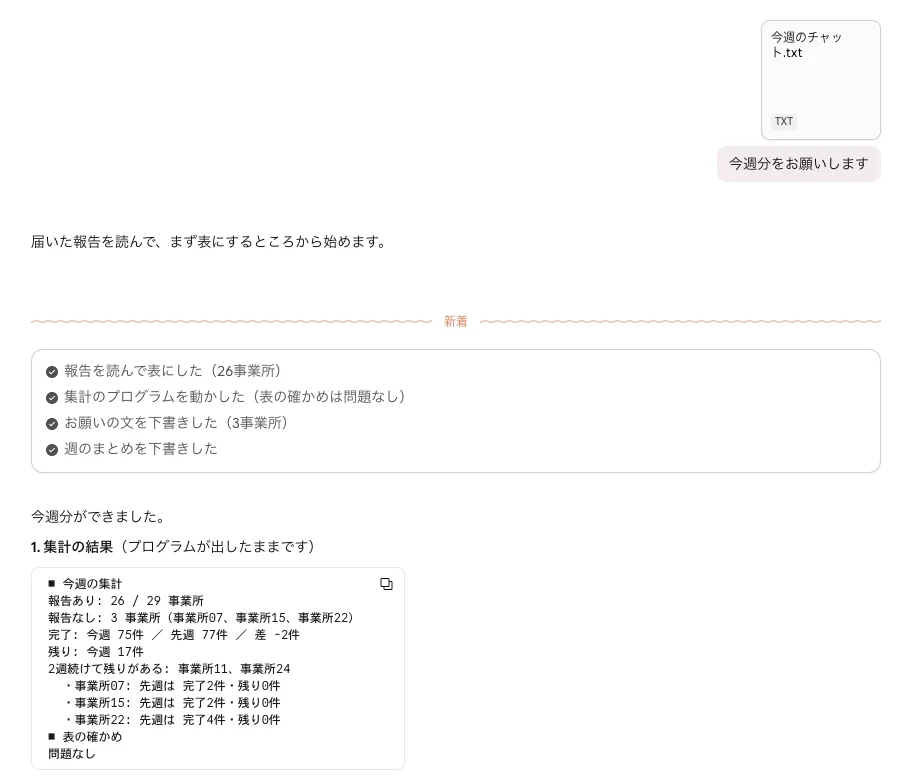
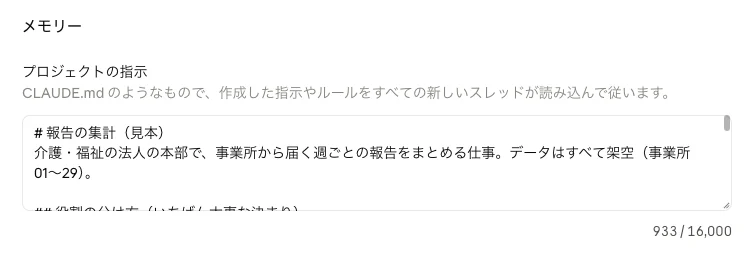
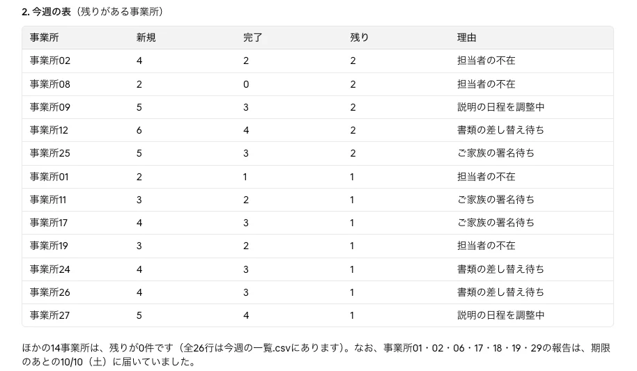
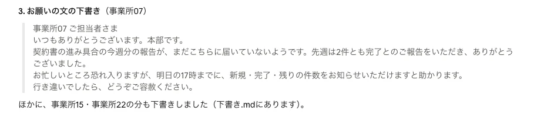
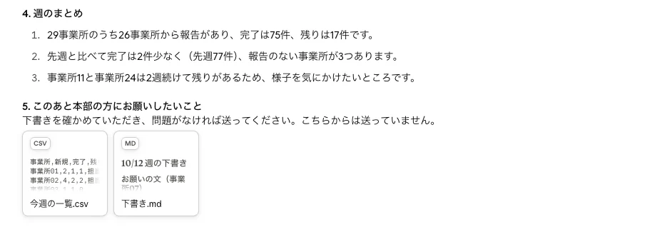

Use case
現場から本部への報告を、手で集計しない
事業所から毎週届く報告を、AIとプログラムで一覧にまとめ、出ていない事業所へのお願いの文まで下書きする使い方です。確かめて送るのは、本部の方です。
実務を想定した使い方の例です。
01Problem
困りごと
「毎週、チャットに届く報告を1つずつ読んで表に写す。出ていない事業所を探して、連絡する。集計が終わるころには、ほかの仕事が後ろにずれている。」
そこで、読む・写す・探す・文を作る、をAIとプログラムに任せ、人は確かめて送るだけにする形を考えました。
02Flow
仕組みの流れと、だれが何をするか
- 人事業所・本部の方
- プログラム決まった手順で動く部分
- AI読む・書くを手伝う部分
- 人
事業所が報告する
今のチャットのまま、文章で送っていただきます。書き方は、そろっていなくてかまいません。
- AI
文章の報告を、表の形に直す
書き方がばらばらの文から、事業所名・済んだ件数・残り・理由を読み取ります。
- プログラム
合計を出す
AIが作った表のファイルを、プログラムが読んで合計を出します。数えるところは、AIに任せません。
- プログラム
出ていない事業所を拾う
事業所の名簿と突き合わせて、期限までに報告がない所を一覧にします。
- AI
お願いの文を下書きする
事業所ごとに、前の週の様子もふまえた文を作ります。
- AI
週のまとめを下書きする
一覧から、全体の様子・先週との違い・気をつけたい事業所を、短くまとめます。
- 人
確かめて送る
下書きを読み、直すところを直して、いつものチャットやメールで送ります。
03Examples
実際に動かした画面
人ひと言で頼む

毎週することは、今週の報告のファイルを付けて「今週分をお願いします」と送るだけです。表の形や、数えるのはプログラムに任せること、送らないことなどの決まりは、AIの「プロジェクト」に最初に1回だけ書いてあります。AIは毎回それを読んでから動くので、背景や頼み方をそのつど貼りつける必要はありません。

最初に1回だけ書いておく決まり（全文）
# 報告の集計（見本） 介護・福祉の法人の本部で、事業所から届く週ごとの報告をまとめる仕事。データはすべて架空（事業所01〜29）。 ## 役割の分け方（いちばん大事な決まり） - AI：文章の報告を読んで表にする／お願いの文を下書きする／週のまとめを下書きする - プログラム（ライブラリの shuukei.py）：数える／名簿と突き合わせて、報告のない事業所を拾う／表の数字が合っているか確かめる - 人（本部の方）：下書きを確かめて、送る - 数える・拾うところは、自分で計算しない。必ず shuukei.py を動かして、その結果を使う - 送らない。作るのは下書きまで
決まりの続き（手順と話し方）を開く
## 「今週分をお願いします」と言われたら いっしょに渡された今週の報告（チャットの文）を使って、次を順に続けて行う。途中で確認を求めない。 1. 報告の文を読み、1事業所1行の表を作る（列は 事業所,新規,完了,残り,理由。理由がなければ空）。「今週の一覧.csv」として保存する 2. python3 shuukei.py 今週の一覧.csv を動かす（事業所名簿.csv・先週の一覧.csv はライブラリにある。shuukei.py と同じ場所に置いて動かす）。「表の確かめ」に問題が出たら、表を直してもう一度動かす 3. 集計の結果にある「報告なし」の事業所ごとに、お願いの文を下書きする。先週の様子をひと言ふまえる。期限は「明日の17時」。ていねいで短く、責めない言い方 4. 集計の結果だけを使って、週のまとめを3行で下書きする（全体の様子／先週との違い／気をつけたい事業所） 終わったら、次の順で1つの返事にまとめる。 1. 集計の結果（プログラムが出した数字をそのまま） 2. 今週の表（残りがある事業所を上に） 3. お願いの文の下書き（1つは全文。ほかは事業所の名前だけ） 4. 週のまとめ（3行） 5. このあと人がすること（下書きを確かめて、送る） ## 話し方 - 返事は短く。です・ます。専門用語を使わない - 相手は「本部の方」。名前で呼ばない - 利用者さんの名前のようなものが報告にあっても、表・下書き・まとめには書かない - 絵文字は使わない
AI文章の報告を、表の形に直す

書き方がばらばらの報告26件を読んで、表にした画面です（画面には、残りがある事業所だけが出ています）。この回は、26事業所ぶんの数字がすべて元の報告と合っていました（正解の表と照らし合わせて確認）。
AIが読んだ報告
事業所から届いた報告（26件）を開く
[10/8（木） 09:00] 事業所14です。今週は新規5件、うち5件が完了しました。残りはありません。 [10/9（金） 16:13] おつかれさまです、事業所23より報告します。新規の契約4件／完了4件／未完了なしです。 [10/9（金） 14:26] 【事業所16】今週分です。5件のうち5件まで済みました。すべて済んでいます。 [10/9（金） 12:39] 事業所28 新規3 完了3 残0 [10/10（土） 10:52] 事業所18です。今週の新規は3件でした。3件とも完了しています。 [10/8（木） 17:05] 事業所25です。今週は新規5件、うち3件が完了しました。残り2件はご家族の署名待ちです。 [10/9（金） 15:18] おつかれさまです、事業所03より報告します。新規の契約1件／完了1件／未完了なしです。 [10/9（金） 13:31] 【事業所05】今週分です。5件のうち5件まで済みました。すべて済んでいます。 [10/9（金） 11:44] 事業所13 新規5 完了5 残0 [10/10（土） 09:57] 事業所06です。今週の新規は4件でした。4件とも完了しています。 [10/8（木） 16:10] 事業所09です。今週は新規5件、うち3件が完了しました。残り2件は説明の日程を調整中です。 [10/9（金） 14:23] おつかれさまです、事業所27より報告します。新規の契約5件／完了4件／未完了1件（説明の日程を調整中）です。 [10/9（金） 12:36] 【事業所26】今週分です。4件のうち3件まで済みました。あと1件、書類の差し替え待ちのため来週になります。 [10/9（金） 10:49] 事業所04 新規1 完了1 残0 [10/10（土） 17:02] 事業所01です。今週の新規は2件でした。1件は完了、1件が担当者の不在で止まっています。 [10/8（木） 15:15] 事業所24です。今週は新規4件、うち3件が完了しました。残り1件は書類の差し替え待ちです。 [10/9（金） 13:28] おつかれさまです、事業所20より報告します。新規の契約1件／完了1件／未完了なしです。 [10/9（金） 11:41] 【事業所11】今週分です。3件のうち2件まで済みました。あと1件、ご家族の署名待ちのため来週になります。 [10/9（金） 09:54] 事業所08 新規2 完了0 残2 ※担当者の不在 [10/10（土） 16:07] 事業所02です。今週の新規は4件でした。2件は完了、2件が担当者の不在で止まっています。 [10/8（木） 14:20] 事業所10です。今週は新規3件、うち3件が完了しました。残りはありません。 [10/9（金） 12:33] おつかれさまです、事業所21より報告します。新規の契約4件／完了4件／未完了なしです。 [10/9（金） 10:46] 【事業所12】今週分です。6件のうち4件まで済みました。あと2件、書類の差し替え待ちのため来週になります。 [10/10（土） 17:59] 事業所17 新規4 完了3 残1 ※ご家族の署名待ち [10/10（土） 15:12] 事業所29です。今週の新規は1件でした。1件とも完了しています。 [10/10（土） 13:25] 事業所19です。今週は新規3件、うち2件が完了しました。残り1件は担当者の不在です。
プログラム数える・出ていない事業所を拾う
■ 今週の集計 報告あり: 26 / 29 事業所 報告なし: 3 事業所（事業所07、事業所15、事業所22） 完了: 今週 75件 ／ 先週 77件 ／ 差 -2件 残り: 今週 17件 2週続けて残りがある: 事業所11、事業所24 ・事業所07: 先週は 完了2件・残り0件 ・事業所15: 先週は 完了2件・残り0件 ・事業所22: 先週は 完了4件・残り0件 ■ 表の確かめ 問題なし
上の表と事業所の名簿・先週の一覧を、プログラムが突き合わせた結果です。プログラムはプロジェクトの資料に入れてあり、AIがそれを動かします。表の数字が合わない行があれば、ここで見つかります。
AIお願いの文を下書きする

集計の結果にある「報告なし」の事業所ごとに、下書きを作った画面です。先週の様子をひと言ふまえ、知らせてほしいことと期限を入れています。確かめて送るのは、本部の方です。
AI週のまとめを下書きする

数字はプログラムの結果をそのまま使い、文にするところだけをAIが行っています。
実務を想定したデータを、AI「Claude」のプロジェクト機能で動かした画面です（2026年10月）。
04Roles
任せること、任せないこと
AI読む・書く
- 文章から項目を読み取る
- お願いの文を下書きする
- 週のまとめを下書きする
書き方がばらばらでも読めて、相手に合わせた文が作れるためです。
プログラム数える・拾う
- 合計を出す
- 出ていない事業所を拾う
- 表の数字が合っているか確かめる
毎回、同じ答えになる必要があるところです。AIには任せません。
人確かめる・決める
- 下書きを読んで直す
- 送る
- 気になる事業所への対応を決める
相手との関係に関わるところは、人が行います。
05Tools & Data
使う道具と、データの扱い
- 使う道具
- AI（例：Claude のプロジェクト機能）、集計のプログラム、表のファイル（事業所の名簿・先週の一覧）を使います。決まりと資料は、最初にプロジェクトへ入れておきます。
- 毎週の頼み方
- 決まりは、最初に1回だけAIのプロジェクトに書いておきます。毎週は、今週の報告を渡して、ひと言で頼むだけです。
- 扱うもの
- 事業所ごとの件数、済んだ数、報告した日、理由の短い文です。
- 扱わないもの
- 利用者さんのお名前、契約の内容、請求の数字は扱いません。報告の欄にも書かない形にします。
- AIに渡す範囲
- AIに渡すのは、上の「扱うもの」だけです。送った内容が学習に使われない設定・契約のAIを使います。
06How to start
進め方
- 1. お聞きする
- 今の報告を1つ選び、だれが・何で・どう出しているかをお聞きします。
- 2. 1つでお試し
- その報告1つだけで仕組みを作り、いつもの流れと並べて動かします。
- 3. 数字で比べる
- 集計にかかる時間と、出し忘れの数を、入れる前と後で比べます。
- 4. 広げるか決める
- 効果が見えたら、ほかの報告にも広げます。合わなければ、元のやり方に戻せます。